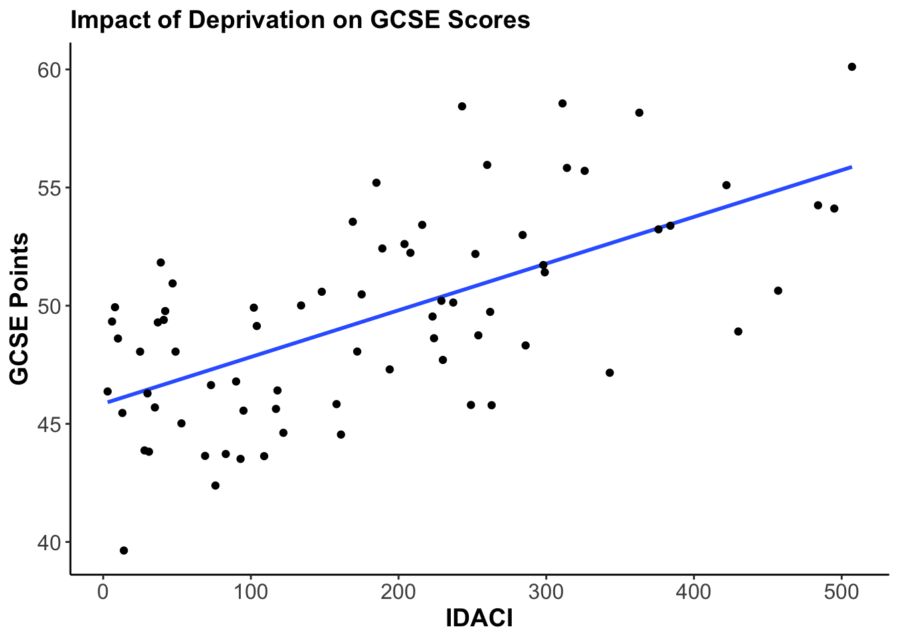

Case Study15
Load Packages and Data
Before starting, we need to load libraries and install packages if not already installed. In these exercises we will be using the following packages:
havenggplot2modelsummary
We will be using the london.csv data set from the lecture, but with a different independent variable this time. These will be of particular interest:
| variable | label | year |
|---|---|---|
| const | Parliamentary constituency | n/a |
| gcse | An average score based on a pupil’s best eight grades in a group of GCSEs. The maximum a pupil can achieve is 90 points. | 2019 |
| eth_min | Percent of population composed by ethnic minorities | 2011 |
| idaci | The Income Deprivation Affecting Children Index rank - how it compares to other constituencies | 2015/16 |
| income | Mean income by constituency | 2017/18 |
Data are taken from House of Commons Library (n.d.), GOV.UK (2013), and London Data Store (2010). Set your working directory and load the data.
Inspect your data
Here you can use several basic functions. The dataset does not contain too many variables, so you can start by using names(), str(), etc.
Preliminary Analysis
Let’s say we want to look at the relationship between income deprivation affecting children and GCSE scores. The two variables are, respectively, idaci and gcse.
Now, formulate the working (alternative) and the null hypothesis. Write them down.
H\(\pmb{_0}\):
H\(\pmb{_1}\):
Which is your dependent variable?
Run a frequency table on the idaci variable. Does this distribution make sense? Why/why not?
Do the same for the other variable. And guess what is the level of measurement.
Visualisation
Let’s start with the visualisation of the relationship between the two variables. What is the best way to visualise the relationship considering the level of measurement of our variables?
Hint: Probably a scatterplot, right? So, use a scatterplot to visualise the relationship and add the regression line.
You can use ggplot, but also the base R plot() function.
Improve the graph by:
- Adding a regression line.
- Adding up a relevant title, also possibly a subtitle.
- Adding axes labels and making them readable.

Visualisation 2.0
Now, draw a vertical and horizontal line corresponding to the mean of your variables using geom_hline and geom_vline. You can thus check if the regression line passes through the mean of X and Y. (see: https://www.rdocumentation.org/packages/ggplot2/versions/0.9.1/topics/geom_hline).
You can improve the scatterplot using a series of arguments (e.g., alpha) in the geom_point() function in ggplot. Try to improve the Aesthetics of the scatterplot playing with alpha, for instance. (see: https:
//www.rdocumentation.org/packages/ggplot2/versions/3.4.0/topics/geom_point).
Saving the Scatterplot
You can save a graph as .png, .JPG (even .pdf) that you can then import in a word document. Although there are many way to use your R output, saving a graph might be sometimes useful.
Use the function ggsave() to save your scatterplot. Again, there are tons of examples online, google it.
Hint: You first need to store the graph in an object.
Hint 2: The file will end up in your working directory.
Regression Analysis (yes, finally)
Now we can finally run a linear regression with gcse as the outcome variable and idaci as the predictor using the lm() function. Store the results in an object called model and visualise the regression output using summary().
# Store the results in an object called model #
model<-lm(gcse ~ idaci, london)
# Visualise the regression output using summary() #
summary(model)
Call:
lm(formula = gcse ~ idaci, data = london)
Residuals:
Min 1Q Median 3Q Max
-6.4921 -2.5321 -0.1722 2.7077 7.7815
Coefficients:
Estimate Std. Error t value Pr(>|t|)
(Intercept) 45.852958 0.657251 69.765 < 2e-16 ***
idaci 0.019765 0.002894 6.831 2.4e-09 ***
---
Signif. codes: 0 '***' 0.001 '**' 0.01 '*' 0.05 '.' 0.1 ' ' 1
Residual standard error: 3.317 on 71 degrees of freedom
Multiple R-squared: 0.3965, Adjusted R-squared: 0.388
F-statistic: 46.66 on 1 and 71 DF, p-value: 2.398e-09You can also extract specific blocks of the output table. One way of doing it is to use the brackets [] after the summary() function. For example summary()[8]. Try to extract the block of Coefficients from the table, like this:
$coefficients
Estimate Std. Error t value Pr(>|t|)
(Intercept) 45.8529580 0.65725150 69.764707 3.767825e-67
idaci 0.0197651 0.00289364 6.830532 2.397995e-09Interpretation
Interpret the results, starting with model evaluation.
- Is the p-value of the F-statistics statistically significant? We will be discussing this in our following lectures.
- How much variation in the outcome variable does the model explain? What does this tell us about the model?
- What’s the value of the slope? What does it mean?
- What’s the value of the intercept? How do we interpret it? Is it statistically significant? What does it mean in practice?
- Interpret the results (in plain language) referring to the hypothesis you formulated above.
Exporting the Results
As for the graphs, you can also export and save the results of the regression model in a Word table. To do that you can use the ‘modelsummary’ package.
Just like writing a shopping list, we start by creating a list of models for which we want modelsummary to produce a table. You can merely list the names of the objects in which the models are stored, or you can give them specific names which will appear as column titles in the table. This addition is by no means a must, but sometimes you might wish to give models a particular name, for example if you have used different methods of estimation, different components of a theory, etc. In the table we are creating here, I wish to distinguish between bivariate and multivariate models. By default, modelsummary just numbers models in ascending order.
This simple step is already sufficient to produce – an admittedly somewhat crude – results table. All we have to do is to load the modelsummary package and to use the previously defined list of models as the argument of the modelsummary() function:
Execute these code chunks as we go through this Section, so you can see the alterations we make to the table in real-time.
This table is a vast improvement on the raw R output you would receive when calling summary(model1). But it is far from finished. One characteristic which is conspicuously absent is an assessment of statistical significance. In model summaries of this kind this information is usually provided in the form of asterisks or other symbols next to the respective coefficient. We can add these simply by adding the option stars=TRUE to the code.
Next up is the modification of the stub. The stub is the leftmost column in which you name the indicators for which coefficients will be presented.In the stub, “[a]bbreviate nothing. And never ever ever use computer variable names to stand for concepts. These are personal code words that convey no meaning to readers.” (Stimson, n.d., p. 10) Following this advice, let us add proper labels to the independent variables.
To let modelsummary know how to replace each variable name, we create a so-called coefficient map. This is really just a character vector which follows a “before-after” logic in each of its rows. For example 'age'='Age' replaces the variable name age with the label Age. We need to do this for all the variables we used in our models. I am storing this in a vecor called cm which stands for coefficient map.
The next step is easy, as we only need to feed this coefficient map into the modelsummary code with the option coef_map=cm:
This is a personal thing, but I also like to show the label of the dependent variable in results tables. They just feel incomplete to me without this information. There is no default to achieve this in modelsummary and so we need to use a little trick.
What I want to add in the first row, but only in the second columm, the text . This requires us to alter the style of the table slightly. modelsummary uses another package called tinytable to style the output. We load the package with library(tinytable) and instruct R to place the text where we want it.
library(tinytable)
modelsummary(models,
stars = TRUE,
coef_map = cm)|>
group_tt(j = list("Dependent Variable: GCSE Score" = 2))Lastly, let us tackle the model fit statistics. By default, modelsummary prints a whole festival of these into the bottom section of the table, but I want to concentrate only on R\(^2\).
modelsummary(models,
stars = TRUE,
coef_map = cm,
gof_omit = 'DF|Deviance|Log.Lik|F|AIC|BIC|RMSE')|>
group_tt(j = list("Dependent Variable: GCSE Score" = 2))This should produce this table:
| Dependent Variable: GCSE Score |
|
|---|---|
| Bivariate | |
| + p < 0.1, * p < 0.05, ** p < 0.01, *** p < 0.001 | |
| Income Deprivation Affecting Children Index | 0.020*** |
| (0.003) | |
| Intercept | 45.853*** |
| (0.657) | |
| Num.Obs. | 73 |
| R2 | 0.397 |
| R2 Adj. | 0.388 |
You can export your tables for use in MS Word, or Apple Pages. But you will not be able to export the full table, only up to the point at which you are specifying the options for tinytable with |>. This is probably as good a reason as any to start working with Markdown or LaTeXBut if you are happy with this caveat, the following code will render the table in an MS Word document (output="table.docx") that is placed in your working directory.
The structure of this study was originally designed by Oleksiy Bondarenko. I have slightly altered it in subsequent years.↩︎